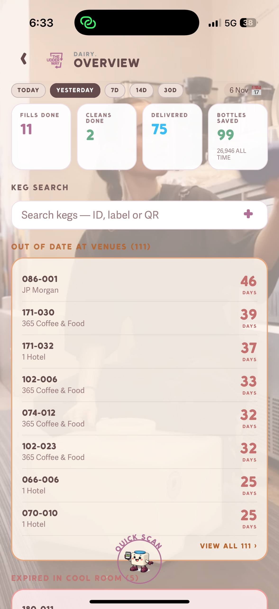
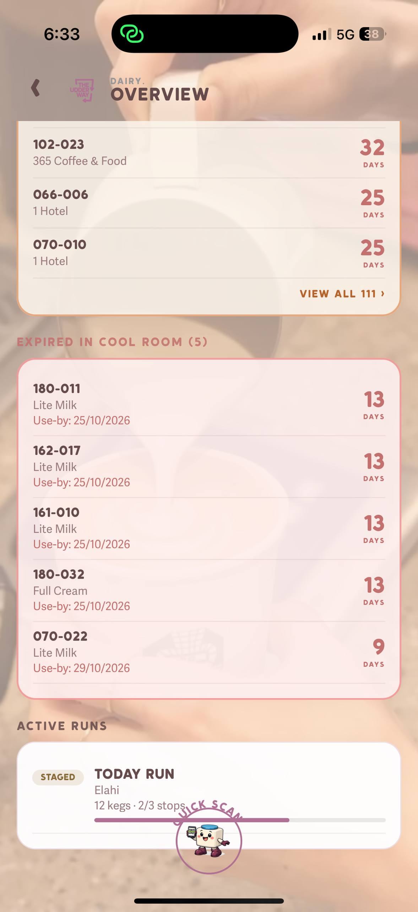
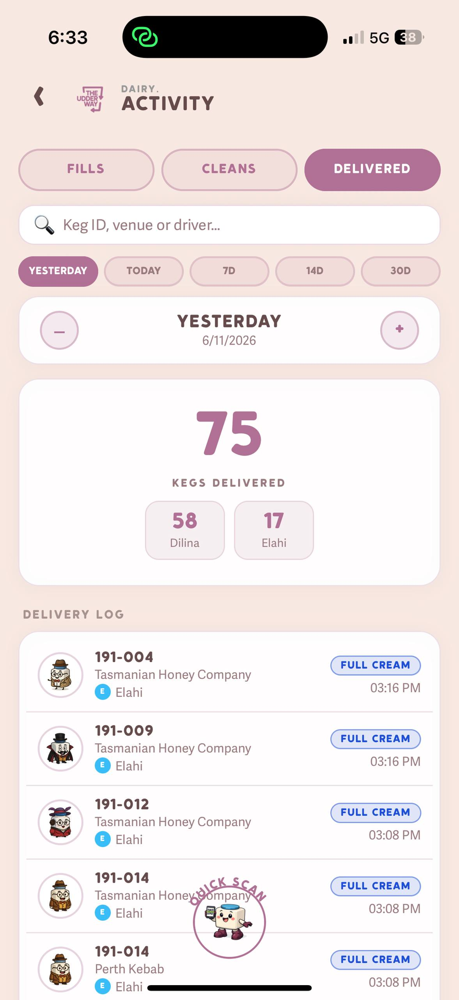
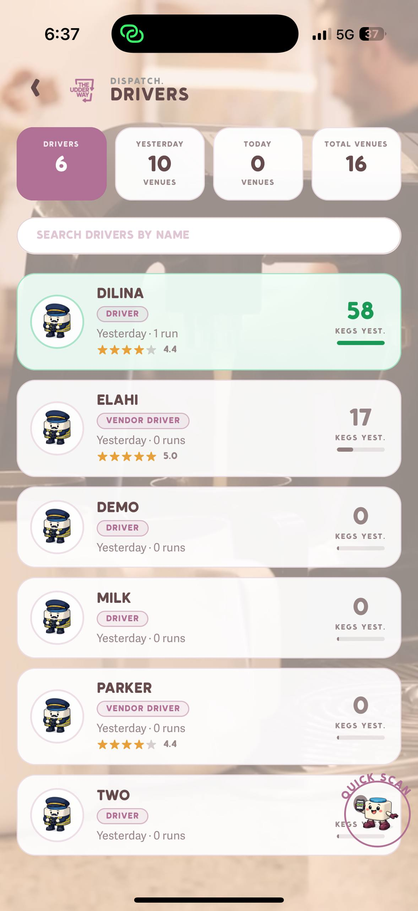
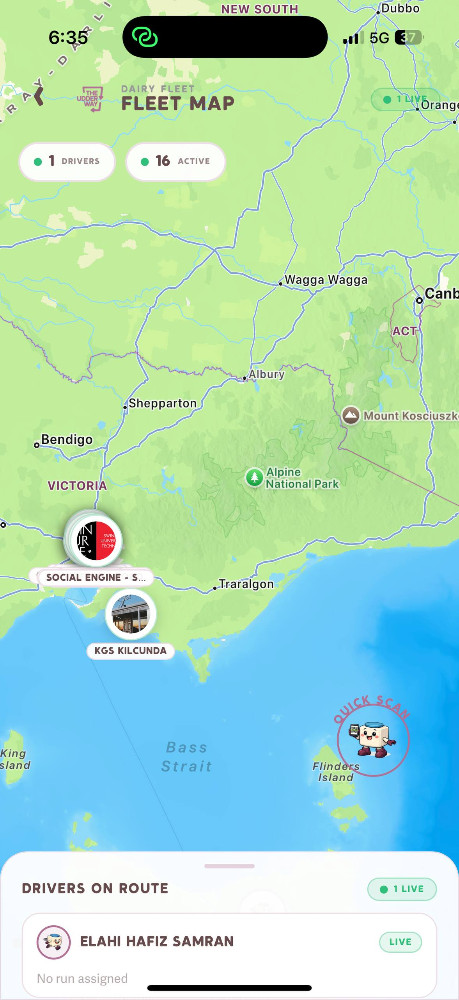
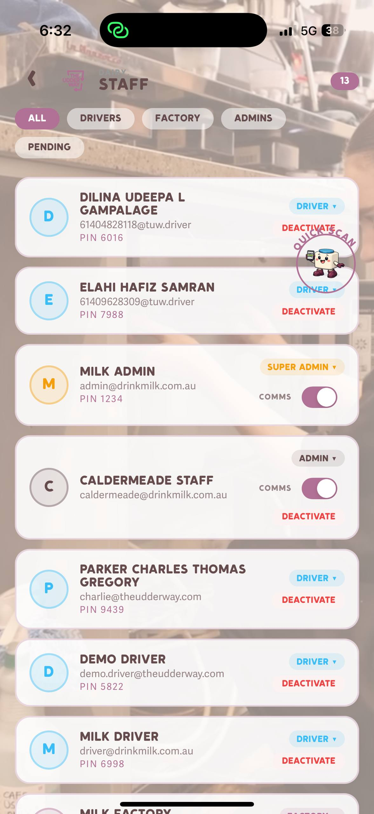
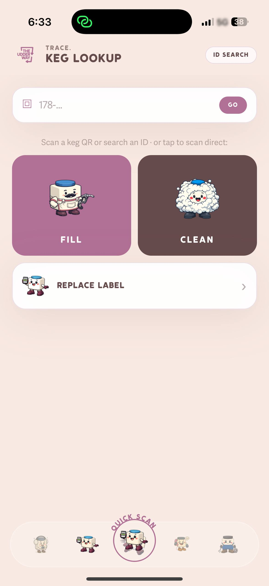
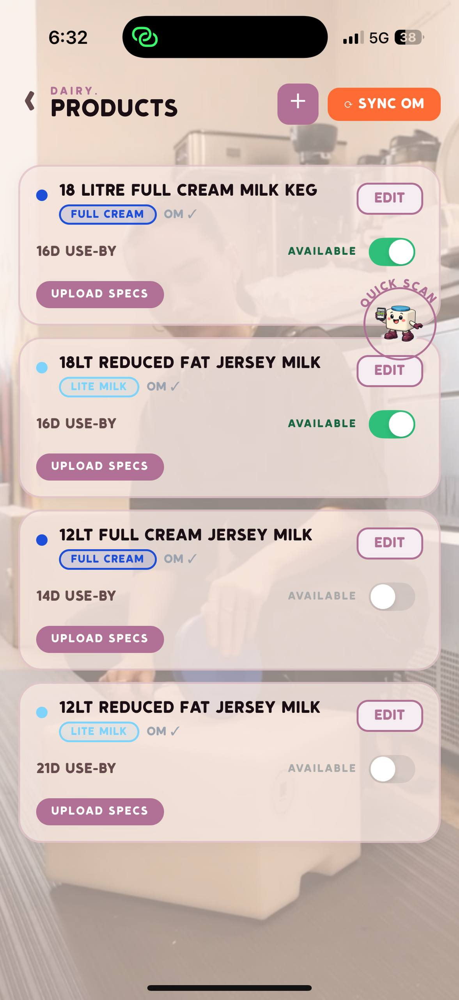

Every workflow in the app starts from the Home screen. Tap any icon to go directly to that tool. The BOTTLES ELIMINATED counter at the bottom updates in real time — your all-time environmental impact, every session.
Quick ScanThe floating button at the bottom-right (keg holding a phone, labelled QUICK SCAN). Hold it to open the camera. The camera stays open only while you hold. Scan a QR to see keg ID, status, venue, and use-by. Release to close. It is a lookup only — it does not fill, clean, deliver, or change a keg’s status. You can drag the button if it covers something.
Section 1 · Most Important — Do This After Every Wash
Clean
Record washed kegs — moves them from the dirty queue back into the fill cycle
Returned empty kegs must be physically washed, then scanned in the CLEAN screen. This is what moves a keg from "Needs Cleaning" status to "Ready to Fill" — without this step, the keg stays stuck in the dirty queue and won't appear for filling.
When to Use
Every time you finish washing a keg. If you wash 50 kegs, scan all 50 immediately after. Don't batch them up — if the system doesn't know they're clean, the fill queue looks smaller than it is.
Step-by-Step
From the Home screen, tap CLEAN (the fluffy white character icon — 2nd row, 2nd column)
The camera opens immediately for QR scanning
Point the camera at the QR code on the keg body or lid — it reads automatically, no button tap needed
The keg ID, previous status, and last fill date are shown — confirm it's the right keg
Tap Confirm Clean — the keg status changes to Ready to Fill instantly
The scanner stays open — scan the next keg immediately
What Changes in the System
↓
Needs Cleaning
Counter decreases in Overview
↑
Ready to Fill
Queue grows — keg ready to be filled
⚠️ ImportantOnly scan a keg as clean AFTER it has been physically washed. Scanning before washing pushes it into the fill queue — a dirty keg could get filled and delivered. The system relies on you to scan at the right time.
💡 Alternative Path — TRACE ScreenYou can also trigger CLEAN directly from the TRACE / Scan screen (Section 9) — tap the dark brown CLEAN tile. Same function, different entry point. Useful when you're already on the keg lookup screen.
Section 2 · Most Important — Do This After Every Fill
Fill
Record a keg as filled — it enters the Cool Room and becomes available for delivery
Every time a keg is filled with product at the filling station, scan it in the FILL screen. This records which operator filled it, what product type, and when — and moves the keg from the fill queue into the Cool Room (delivery-ready stock).
When to Use
Immediately after filling each keg. Scan at the filling station while the keg is still in front of you so you don't miss any.
Step-by-Step
From the Home screen, tap FILL (the keg-with-tool icon — 1st row, 3rd column)
Select the product type:
Full Cream (FC) — standard full-cream milk · Blue lid
Lite Milk (LM) — reduced fat milk · Pink lid
Light Fat (LF) — if applicable
The camera opens — scan the QR code on the keg
The app auto-sets the use-by date (fill date + 12 days for 18L kegs, 14–16 days depending on product — set in PRODUCTS)
Take a selfie/operator photo — this logs who filled the keg for quality traceability
Tap Confirm Fill — keg status changes to Filled and appears in the Cool Room count
What Changes in the System
↓
Ready to Fill
Queue decreases
↑
Cool Room
Count increases by product type
📸
Attribution
Operator photo logged
⚠️ Select the Right Product Type FirstIf you scan a Full Cream keg under "Lite Milk", the system miscounts your Cool Room and the driver may deliver the wrong product. Product type cannot be changed after scanning without an admin correction.
💡 Lid Colour ShortcutBlue lid = Full Cream. Pink lid = Lite Milk. When scanning a batch, verify the lid colour before selecting the product type.
💡 Alternative PathFILL is also accessible from the TRACE screen (Section 9) — tap the mauve FILL tile. Same function, same result.
Section 3 · High Priority — Check Every Morning
Stock
On-hand inventory — Cool Room, clean queue, and what's been ordered
STOCK — On Hand screen
The STOCK screen (icon: keg with earmuffs, 3rd row 2nd column) shows everything physically available at the dairy right now — split into three counts at the top, then a detailed list of every filled batch by use-by date.
Top Summary Cards
66
Cool Room
58 Full Cream + 8 Lite Milk · filled & ready
399
Clean
Washed, waiting to be filled
13
Ordered
12 Full Cream + 1 Lite Milk ordered for next run
Cool Room — Filled Kegs by Batch
Below the summary cards, each batch of filled kegs is listed separately — grouped by product type. Each batch card shows:
Batch count — number of filled kegs in this batch
Product type badge — Full Cream or Lite Milk
Use-by date — based on fill date + product shelf life (12–16 days)
Days remaining — countdown to expiry
SHOW KEGS — expand to see individual keg IDs in this batch
💡 Morning RoutineCheck STOCK every morning before delivery day. If Cool Room is below your expected delivery quantity, start filling immediately — kegs need to be physically filled AND scanned before they appear here.
🚨 Expired in Cool RoomIf any kegs show 0 or negative days remaining, they are expired and must be pulled from the Cool Room immediately. Do NOT deliver expired kegs. See Section 10 (Quality Assurance) for handling expired stock.
How Stock Flows
Kegs move through the Cool Room in this direction:
Clean (399)
→ FILL →
Cool Room (66)
→ DELIVER →
At Venue (235)
Section 4 · High Priority — Your Daily Command Centre
Overview
Real-time dashboard — all operations at a glance, plus activity history
Overview — main dashboard

Overview — yesterday's activity stats

Overview — alerts & active runs
AI Search Bar
The search bar at the top ("Ask anything about your kegs...") lets you query your fleet in plain language. Quick-filter pills below it jump straight to Kegs, Orders, Venues, Runs, or Fills. The KEG SEARCH bar lower down lets you look up kegs by ID, label, or QR directly from the dashboard.
Live Status Cards
235
At Venues
Delivered & in use
17
Empties Waiting
Ready to collect
277
Needs Cleaning
Awaiting wash
399
Ready to Fill
Clean, in queue
Going Out Today
The "Going Out Today" widget shows how many filled kegs are scheduled for today's deliveries. Date tabs across the top — TODAY, TUE, THU, FRI — let you switch delivery days to plan fills in advance.
Fleet Status Donut Chart
Visual breakdown of all 1,007 kegs by status. Each segment is tappable. The chart updates in real time as kegs are scanned, delivered, cleaned, and filled.
Activity Stats — Time Filter
Select a time window at the bottom of the Overview to see performance data:
The Overview scrolls to reveal two critical alert sections:
🔴 Out of Date at Venues (111 kegs)Kegs still at venues past their use-by date. This list shows each keg ID, the venue, and how many days overdue. These kegs must be collected and quarantined on the next run. Contact the venue if needed. Do not leave expired kegs in circulation.
🔴 Expired in Cool Room (5 kegs)Filled kegs in your Cool Room that have passed their use-by date. Pull these immediately — do not deliver them. Mark as quarantine via SCAN (Section 9).
Active Runs
Below the alerts, the ACTIVE RUNS section shows any delivery run currently in progress — driver name, stops completed vs total, and a progress bar. Tap to open the live run view.
ACTIVITY Tab — Detailed Logs
From Overview, tap through to the ACTIVITY screen for detailed logs of every fill, clean, and delivery. Three tabs:

Activity — Delivered tab
FILLS — every fill recorded, with keg ID, operator, product type, timestamp
CLEANS — every clean recorded, with keg ID, operator, timestamp
DELIVERED — full delivery log by keg ID, venue, driver, product type, and time. Yesterday: 75 kegs delivered (58 by Dilina, 17 by Elahi)
Use the date picker (+/− arrows or the range tabs) to review any past day's activity.
Section 5 · Delivery Days
Drivers
Dispatch, delivery run creation, and live GPS driver tracking

DRIVERS — Dispatch screen

FLEET MAP — live GPS view
Dispatch Summary
6
Drivers
Total team
10
Yesterday
Venues served
0
Today
Venues so far
16
Total Venues
In rotation
Driver Cards — What You See
Each driver card shows:
Name & role badge — DRIVER or VENDOR DRIVER (vendor drivers can also re-deliver at vendor venues)
Yesterday's performance — number of runs and kegs delivered
Star rating — based on delivery performance (Dilina: 4.4★ / Elahi: 5.0★)
Kegs yesterday — green bar showing relative volume (Dilina: 58 kegs, Elahi: 17 kegs)
Creating a Delivery Run
Tap DRIVERS from the Home screen
Tap + New Run
Select the delivery date (Tuesday or Friday)
Add venue stops in the order they'll be visited — drag handles to reorder the route
Assign a driver from the list
Tap Start Run when the driver departs
Live Driver Tracking
Once a run is active, the driver's GPS position updates every 10 seconds. From the run view you can see the driver moving toward each stop in real time. The FLEET MAP (home screen icon 9) shows all active drivers simultaneously on a map of the region.
Stop Completion
Drivers complete stops from their Driver App by scanning delivered kegs at each venue. The dairy app updates automatically — no manual refresh or action needed. Each delivery also logs to the venue's keg history and updates fleet status to At Venue.
💡 Vendor DriversDrivers tagged as VENDOR DRIVER (like Elahi and Parker) can deliver kegs to vendor venues and also re-route kegs between vendor locations without returning to the dairy. This is used for venues like Two Providores that redistribute kegs onward.
NEAREST — sort by proximity to current GPS location (use this on delivery days)
MOST KEGS — sort by number of kegs at the venue (find your biggest accounts)
What Each Venue Card Shows
Keg count badge (top-left circle) — kegs currently at this venue right now
PIN badge — 4-digit PIN for venue staff to log into the Venue App
VENUE STOCK button — see the exact kegs at this venue, by product type
DELIVERIES button — full delivery history to this venue
Last Delivery — when and how many kegs (e.g. "YESTERDAY · 11 KEGS")
Avg Kegs — average order size per delivery
Avg Delivery Time — average time between deliveries
VENDOR toggle — marks this venue as a keg re-distributor (vendor kegs can be re-delivered)
Adding a New Venue
Tap the NEW button (top-right, purple) from the CUSTOMERS screen
Search for the venue name or enter details manually
Set location, contact name, and link to Ordermentum account if applicable
The venue is assigned a PIN automatically — give this PIN to the venue manager so they can log into the Venue App
💡 List PriceThe banner at the top of Customers shows the current default keg price from Ordermentum ($54.00/keg as of Nov 2026). This is display-only — pricing changes are managed in Ordermentum directly.
Section 7 · Admin
Staff
Manage your team — roles, PINs, logins, and access control

STAFF — Settings → Staff
Staff management is accessed via SETTINGS → Staff. You can view all 13 current team members, filter by role, and manage each account's PIN, role, and access.
Staff Tabs
Tab
Who
ALL
All 13 staff across every role
DRIVERS
Delivery drivers — log in with PIN on Driver App
FACTORY
Factory/production staff — handle fill and clean ops
Full platform access including staff & settings management
What's on Each Staff Card
Name — full name
Email / Driver ID — login identifier (email for admins, generated ID for drivers e.g. 61409628309@tuw.driver)
PIN — shown in plain text for driver and factory accounts
Role badge — DRIVER / FACTORY / ADMIN / SUPER ADMIN
COMMS toggle — enables internal communications notifications for admin accounts
DEACTIVATE — immediately revokes access (reversible by admin)
⚠️ When a Staff Member LeavesDeactivate their account immediately. Deactivated drivers cannot log in even with their old PIN. Do not leave active accounts for departed team members.
Section 8 · Delivery Days
Orders
View and manage venue orders synced automatically from Ordermentum
The ORDERS screen (home icon 4 — keg with headphones) shows all venue orders pulled automatically from Ordermentum. No manual entry. Orders are grouped by delivery date so you can see exactly what goes out on each run.
What Orders Show
Venue name and delivery location
Delivery date — Tuesday or Friday (the system uses delivery date, not invoice due date)
Quantities by type — Full Cream (FC), Lite Milk (LM), Light Fat (LF)
Order status — Placed, In Progress, Completed
Delivery Windows
Delivery Day
Orders Close
Use This To
Tuesday
Monday evening
See total FC/LM needed for Tue run
Friday
Thursday evening
See total FC/LM needed for Fri run
Planning Fills from Orders
Open ORDERS → filter by the upcoming delivery date
Total up the FC and LM quantities across all orders
Compare to STOCK → Cool Room — are you short?
If short: go fill more kegs now using the FILL screen
Re-check OVERVIEW → "Going Out Today" to confirm numbers match after filling
💡 DeduplicationIf a venue places multiple orders for the same delivery date (e.g. places then amends their order), the system automatically keeps only the latest one. Older duplicates are auto-resolved — you always see the most current order.
⚠️ Delivery Date vs Invoice Due DateThe system always uses delivery date (when kegs physically arrive at the venue) for scheduling. Ordermentum's "dueAt" field is payment due only. The app ignores it for delivery planning.
Section 9 · As Needed
Operations
Trace any keg's full history — SCAN, FILL, CLEAN and REPLACE LABEL in one place

TRACE — Keg Lookup screen
The TRACE screen (also the SCAN icon) is the keg investigation and operations hub. From here you can look up any keg by scanning its QR code — and you can also trigger FILL, CLEAN, and REPLACE LABEL directly without going back to the home screen.
SCAN — Quick Keg Lookup
Tap the SCAN icon (home icon 12) or tap TRACE/SCAN from any screen
Point the camera at any keg's QR code — it reads automatically
Alternatively, tap ID SEARCH (top right) to type the keg ID manually (e.g. 178-023)
The keg's full profile loads instantly
What You See After Scanning
Current status — where the keg is right now
Current location — which venue holds it, or if it's at the dairy
Use-by date — if currently filled
Fill history — every fill with date, product type, and operator photo
Delivery history — every venue this keg has visited, with dates
Clean history — every wash record with timestamp
Quick Action Tiles on the TRACE Screen
Tile
What It Does
FILL (mauve tile)
Open the fill workflow — shortcut to Section 2
CLEAN (dark brown tile)
Open the clean workflow — shortcut to Section 1
REPLACE LABEL
Assign a new QR label to the last-scanned keg
REPLACE LABEL — When a Keg's QR is Damaged
From the TRACE screen, tap REPLACE LABEL
Scan the new replacement sticker (from the label roll)
Scan the existing keg — or type the keg ID manually if the QR is unreadable
Confirm — the new label is now linked to that keg's full history. All future scans of the new label return the keg's complete record.
Keg Lifecycle — Complete Flow
Ready to Fill
→
Filled
→
Picked Up
→
At Venue
→
Empty
→
Needs Cleaning
→ CLEAN →
Ready to Fill
Section 10 · As Needed
Quality Assurance
Out-of-date kegs, expired stock, and quarantine management
The app surfaces quality issues automatically via the Overview alerts. There are three types you need to actively manage:
1. Out of Date at Venues (111 kegs)
These are kegs still sitting at venues past their use-by date. The Overview screen lists them by keg ID, venue name, and how many days overdue. These must be collected and quarantined on the next delivery run.
Go to OVERVIEW → scroll to "Out of Date at Venues"
Note which venues have overdue kegs and add them to the next run as collection stops
Driver collects the kegs during the run
On return: scan via SCAN, then quarantine each expired keg (see below)
2. Expired in Cool Room (5 kegs)
These filled kegs in the Cool Room have passed their use-by date. Do not deliver them.
Go to OVERVIEW → scroll to "Expired in Cool Room"
Physically locate each keg (note the keg IDs shown)
Remove from the Cool Room and store separately
Quarantine each one via SCAN → Quarantine (see below)
3. Quarantine — Removing a Keg from Circulation
Use quarantine for any keg with a suspected or confirmed quality issue (contamination, damage, curdling complaint, fill without prior clean).
Open SCAN / TRACE and scan the keg
On the keg detail view, tap Quarantine Keg
Select the reason: Expired / Damage / Contamination / Suspected fill issue / Other
Confirm — keg immediately removed from active circulation. Status changes to Quarantined
Physically isolate the keg (mark it and store separately from active stock)
Releasing from Quarantine
Only an Admin or Super Admin can release a keg. After inspection and re-cleaning:
Scan the quarantined keg via TRACE
Tap Release from Quarantine
The keg re-enters at Needs Cleaning status — it must be washed before it can be filled
💡 Traceability for NCR ResponsesWhen a customer or dairy partner files a quality complaint (NCR), use SCAN to pull the keg's full history — exact fill operator, date, previous venues, and clean records. This data is essential for formal NCR responses. See keg 191-004 through 191-014 as examples (Tasmanian Honey Company delivery, 6 Nov).
Section 11 · Reference
Delivery Windows
Tuesday & Friday schedule — the weekly rhythm the whole app is built around
Every workflow in the app — orders, fills, runs, driver dispatch — aligns to Tuesday and Friday deliveries. Here is how the full week flows:
Day
Activity
Primary App Tool
Monday
Orders close for Tuesday. Check ORDERS for FC/LM quantities. Top up Cool Room if short.
ORDERS, FILL
Tuesday
Build the delivery run. Assign driver. Track live. Collect empties on the same run.
DRIVERS, FLEET MAP
Wednesday
Clean all returned kegs. Start filling for Friday. Monitor Overview.
CLEAN, FILL, OVERVIEW
Thursday
Orders close for Friday. Final fill top-up. Build Friday run.
ORDERS, FILL, DRIVERS
Friday
Second delivery run. Same flow as Tuesday.
DRIVERS, FLEET MAP
Weekend
Clean any empties collected Friday. Review weekly Overview stats. Plan ahead.
CLEAN, OVERVIEW
Pre-Delivery Checklist
The night before each delivery run:
Open ORDERS → filter by tomorrow's delivery date → note total FC and LM quantities
Open STOCK → Cool Room → confirm you have enough of each type
If short: fill more kegs using the FILL screen before end of day
Open DRIVERS → build the run → add all stops in route order → assign driver
On delivery morning: tap Start Run when the driver departs
Coordination with Driver App
Drivers use the Driver App (separate app) which shows them their stop list in order. As they scan kegs at each venue, the status updates live in the Dairy App. The DRIVERS screen and FLEET MAP show the run progressing in real time — you don't need to call or message the driver to know what's completed.
Support Tools
Products, Chat, Fleet Map & Settings
Admin configuration, communication, and live situational awareness

PRODUCTS — product configuration
PRODUCTS — via Settings
Configure the keg products offered by the dairy. Currently 4 products are set up:
Product
Type
Use-By
Status
18 Litre Full Cream Milk Keg
Full Cream
16 days
✅ Available
18Lt Reduced Fat Jersey Milk
Lite Milk
16 days
✅ Available
12Lt Full Cream Jersey Milk
Full Cream
14 days
⚫ Inactive
12Lt Reduced Fat Jersey Milk
Lite Milk
21 days
⚫ Inactive
AVAILABLE toggle — enables or disables the product for new fills
Direct messaging between dairy admins and drivers. Each venue has its own message thread so conversations stay organised. Use CHAT to coordinate delivery timing changes, flag issues at a stop, or communicate with venue staff. Messages appear in the Driver App in real time — no SMS or external tools needed.
FLEET MAP — Live GPS View
Shows all active drivers simultaneously on a live map. Driver positions update every 10 seconds. Shows active keg locations at venues via map pins. Use FLEET MAP when multiple runs are active at once and you need a single-screen view of all activity. Currently tracking 1 live driver (Elahi Hafiz Samran) and 16 active venue locations.
SETTINGS — App Configuration
Staff — full team management (Section 7)
Products — keg product types and use-by rules (above)